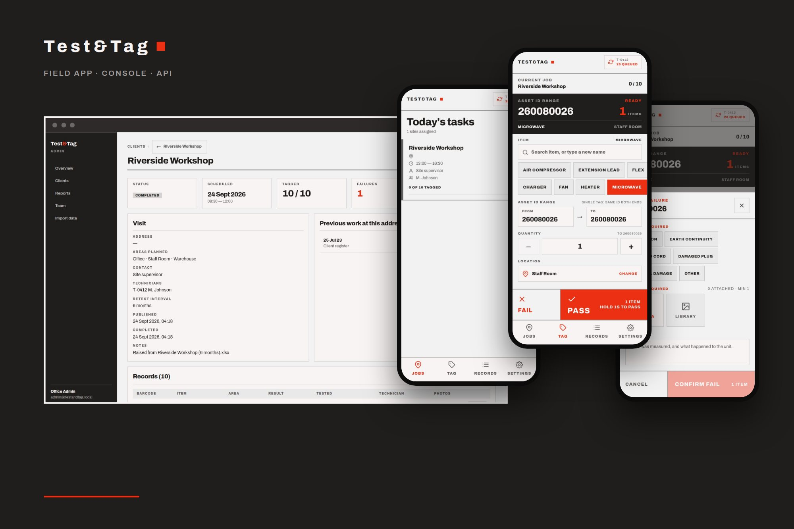

01 — Field-service product
Test and tag, end to end.
An offline-first phone app for the technician, a console for the office, and one API behind both — designed and built by Yonder Tech.

- Type
- Product · designed and built in-house
- Platforms
- iOS · Android · Web
- Stack
- Expo / React Native · React · Fastify · Prisma
- Scale
- 3 apps · 54 API endpoints
01The brief
Electrical test and tag is compliance work: every appliance on a site is tested, tagged and recorded, and the client needs a report they can stand behind. In practice it runs on clipboards, a spreadsheet the client keeps by hand, and whatever the technician remembers from last time.
The brief was one system from the plant room to the report: an app a technician can use one-handed with no signal, a console the office can run the business from, and records that mean exactly the same thing in both.
02Design decisions
- A shared package holds the domain — ID-range expansion, run collapsing, area grouping, retest arithmetic, the Excel parser and the design tokens — so the phone, the console and the server cannot disagree about what a record means.
- The phone is offline first. Records and failure photos queue on the device and sync when there is signal; syncing the same records twice is harmless, and a failure cannot be saved without a reason and a photo.
- Nothing is imported blind. A client’s register is parsed and shown first — areas inferred from blank cells, verdicts read from free-text comments — and only then committed as the asset register, the last inspection and the next job.
03Outcome
Shipped as an Expo app for iOS, Android and the web, an installable React console and a Fastify + Prisma API that issues archived PDF reports. Postgres runs in production and the same schema on SQLite in development; 190 tests pass, including one that runs the whole business through HTTP.
A product designed and built by Yonder Tech. Screens show demonstration data; figures describe the software itself.